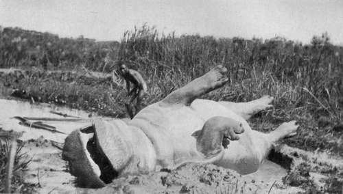

Hunting Elephant And Other Game. Part 8
Description
This section is from the book "Wild Life In Central Africa", by Denis D. Lyell. Also available from Amazon: Wild Life in Central Africa.
Hunting Elephant And Other Game. Part 8
From the path I saw a fine black bull sable a long way off, and he evidently saw me or the porters almost at the same instant, as he started off for safer quarters at once.
For the next few weeks I did not do much hunting, as I wished to give the game a rest, and the weather was terrifically hot and sultry, and I was not feeling too fit.
The heat was not so bad as the Luangwa or Zambesi valleys are in September, October, and November; but it was bad enough, and I have gone through so much heat that I find I cannot stand it as well as I used to do.
However, as my boys kept asking me for some fresh meat, and I also wanted some for myself, I went out on November I and came on a large herd of hartebeest, out of which I shot three animals.
At this time of year many dust devils (whirlwinds) are seen, and sometimes these are so strong that leaves and grass are taken high up into the air. Once, when coming from Tete to Fort Jameson, I was lying on my camp-bed at midday, with a pocket handkerchief lying on my body. A dust devil came along and picked up the handkerchief and took it out of sight. I fancy that many small birds are killed in these whirlwinds ; especially cheepers that have not become strong and well feathered.
Early in December I heard from a native that there were some hippo in the Bua, near Pinda's village, about twelve miles off, so on the 4th of that month I got a few men and went off to try to find them.
As I made a very early start, I reached Pinda's about 10.30 a.m., and the native who had told me of the hippo, a man named Mankanga, went off with a few of the villagers to try to locate the animals, and I sat smoking and watching the natives at their daily tasks of pounding flour, making baskets, attending to their children, and other duties.
Soon Mankanga came back and told me there was a big hippo in a pool only a few hundred yards away, so I took my rifle and cartridge bag and followed him.
There was an anthill about fifteen yards from the bank, surrounded by papyrus and grass, and a few bushes grew out of this anthill forming good cover, so I got Mankanga to carry me through the water and mud to the place.
On getting on the top of the anthill, I soon saw the reddish brown head of the hippo in the middle of the deep pool, so I tried to get my 7.9mm. solid bullet under his ear, as he was nearly full side on.
The bullet hit with that distinct crack that is often heard when a heavy-boned animal is struck fairly in the head, and this sound is unlike the soft " phut" of a bullet hitting a thin-skinned beast behind the shoulder.
I made a bad shot, however, for I saw by the way the hippo sank that he was not killed, as he splashed a good deal. When a hippo is killed in the water he usually sinks quietly without making any splash or commotion.
My bullet must have caused the poor beast great pain, for it immediately began to make the most extraordinary contortions, coming up and going down, and swimming in circles. Every time it came round 1 waited for the shot at the back of its head, and hit it four times out of five shots, one bullet going just over, as I was not quite quick enough. The sixth shot found the exact spot, and, as I have shot a good number of hippo in the past, I knew I had killed him, as he quietly disappeared beneath the surface.
The sun and water were warm, and I thought he would come to the surface in less than two hours, so I went back to the village and attacked the lunch my cook Yakobo had prepared. After I had fared I attended to some bad blisters on my feet, and when I was busy at this Mankanga, whom I had left to watch, came and told me that the hippo had risen. I looked at my watch and found that the time this animal had remained below water was less than an hour. Once in the Zambesi I shot four hippo which came up in about the same time, and, again, I have known others to remain below the surface for over five hours. It depends on several conditions. Great heat and the fatness of a hippo make it rise quickly. A cold atmosphere, cold water, and a thin poor condition may keep a hippo under for several hours. Heat causes gas to generate more quickly in the stomach and entrails, and this causes buoyancy.
Some men then offered to swim out and attach a long bark rope to one of the hippo's legs, but, before allowing them to do so, I asked several of the villagers whether there were any crocodiles in this part of the Bua, for I knew that some parts were infested with these loathsome creatures, and some nine years before I had foolishly stood in the Bua almost up to my armpits shooting at hippo.
On that occasion some creature scraped against my bare legs and made me get out of the water very quickly. It may only have been a fish or a water turtle, but the following day, on getting a hippo out, I found that its skin was scored with the teeth of crocodiles, so I cannot help thinking that a small crocodile intended to seize one of my legs and may have been frightened by a movement or their white colour.
Anyhow, I have never again risked standing long in a river where I knew there were crocodiles, nor have I allowed my natives to take such risks.
If several men go in together and splash hard they frighten the crocodiles away, and on this occasion I told two of the three men to keep on splashing hard, while the third was busy tying on the bark rope to one of the hippo's legs.
Hippo Shot In The Bua River, Nyasaland
At first they were doubtful as to whether the hippo was dead, but I assured them it was, and said I would stand by with my rifle, which I did because I was not so sure about the crocodiles.
It took some time to make the rope fast, and as long to manoeuvre the dead hippo to my side, as the papyrus grass kept catching the rope, and it broke several times. The bank was rather steep where I wished to get the hippo ashore, and, although over fifty men got hold, they could not get it up a muddy ledge, so I cut slits in the hide and passed a long pole through the gaps under the skin. This gave the men a good grip, and they then dragged the animal to where I wanted it.
Continue to:
- prev: Hunting Elephant And Other Game. Part 7
- Table of Contents
- next: Hunting Elephant And Other Game. Part 9